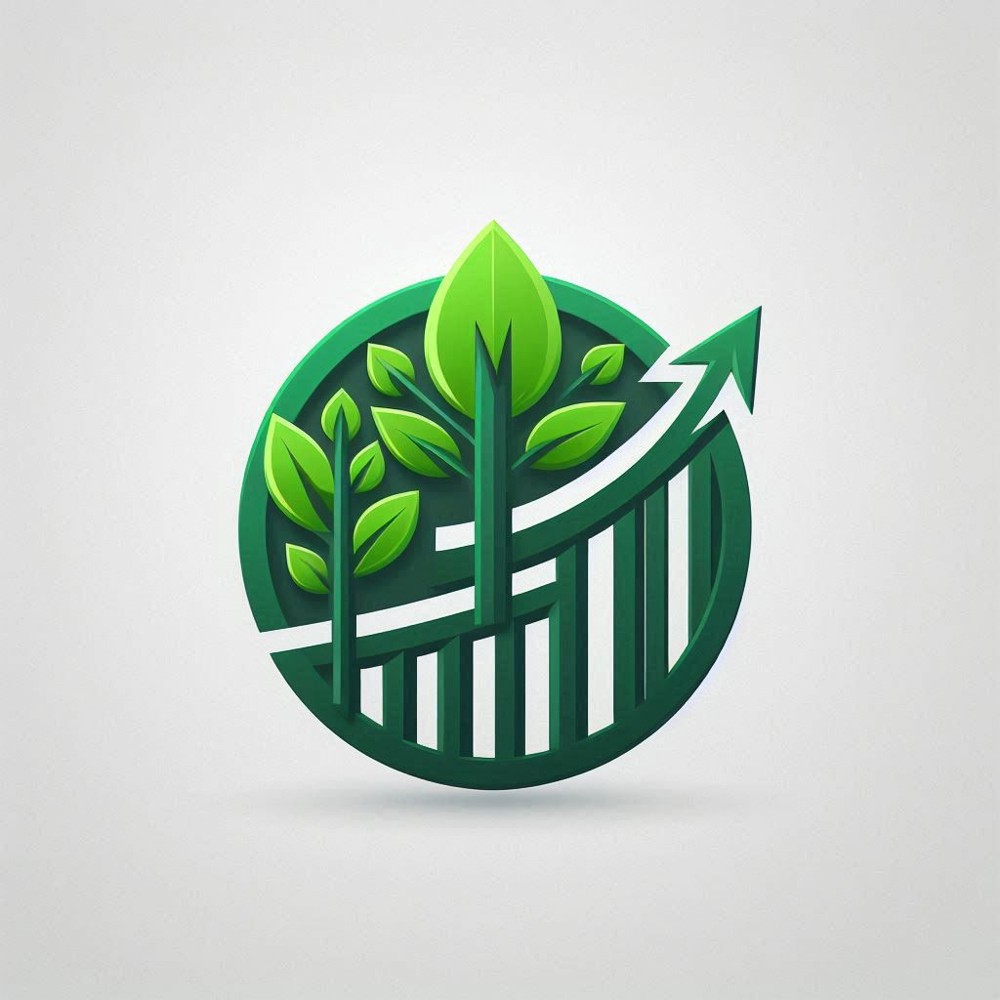

Investasi

Investasi hijau adalah kegiatan penanaman modal yang mengutamakan aspek lingkungan, sosial, dan tata kelola yang baik (ESG: Environmental, Social, and Governance). Tujuan utama dari investasi ini adalah untuk mendukung proyek-proyek yang berkomitmen pada keberlanjutan lingkungan, seperti konservasi sumber daya alam, pengembangan energi terbarukan, dan pengelolaan limbah. Dengan demikian, investasi hijau tidak hanya berfokus pada keuntungan finansial, tetapi juga pada dampak positif terhadap lingkungan dan masyarakat.
Proyek-Proyek Investasi Hijau
- Pengembangan Energi Terbarukan: Proyek ini bertujuan untuk mengembangkan dan mengimplementasikan sumber energi terbarukan seperti panel surya, turbin angin, dan pembangkit listrik tenaga air. Dengan mengurangi ketergantungan pada bahan bakar fosil, proyek ini membantu mengurangi emisi gas rumah kaca dan mendukung keberlanjutan energi.
- Konservasi Sumber Daya Alam: Proyek ini fokus pada pelestarian dan pemulihan ekosistem alami. Ini termasuk reboisasi, perlindungan habitat satwa liar, dan pengelolaan sumber daya air yang berkelanjutan. Tujuannya adalah untuk menjaga keseimbangan ekosistem dan memastikan ketersediaan sumber daya alam bagi generasi mendatang.
- Pengelolaan Limbah yang Efisien: Proyek ini mengembangkan teknologi dan praktik pengelolaan limbah yang lebih efisien untuk mengurangi polusi dan meningkatkan daur ulang. Ini mencakup pengolahan limbah industri, pengelolaan sampah rumah tangga, dan inisiatif daur ulang yang inovatif.
- Pertanian Berkelanjutan: Proyek ini mendukung praktik pertanian yang ramah lingkungan dan berkelanjutan. Ini termasuk penggunaan teknik pertanian organik, pengelolaan tanah yang baik, dan pengurangan penggunaan pestisida dan bahan kimia berbahaya.